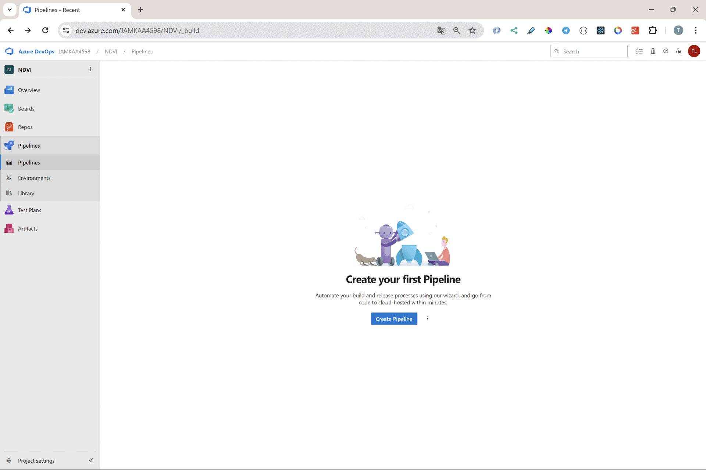

Azure devops pipeline
https://dev.azure.com/
Pipeline
Azure pipeline on Azure DevOps.
pipeline is triggered by git push
Creating a pipeline
First the repository for Azure DevOps https://dev.azure.com/ project have to be created
the source files should be pushed to the repository of Azure DevOps.
Step by step 
azure-pipelines.yml
Azure Devops generated YAML file defining pipelines for CI/CD (Continuous Integration/Continuous Deployment).
# Docker
# Build and push an image to Azure Container Registry
# https://docs.microsoft.com/azure/devops/pipelines/languages/docker
trigger:
- master
resources:
- repo: self
variables:
# Container registry service connection established during pipeline creation
dockerRegistryServiceConnection: '2b2e35d0-3140-4c01-8409-9e453d42fa6f'
imageRepository: 'ndvi'
containerRegistry: 'ndvireg.azurecr.io'
dockerfilePath: '$(Build.SourcesDirectory)/Dockerfile'
tag: '$(Build.BuildId)'
# Agent VM image name
vmImageName: 'ubuntu-latest'
stages:
- stage: Build
displayName: Build and push stage
jobs:
- job: Build
displayName: Build
pool:
vmImage: $(vmImageName)
steps:
- task: Docker@2
displayName: Build and push an image to container registry
inputs:
command: buildAndPush
repository: $(imageRepository)
dockerfile: $(dockerfilePath)
containerRegistry: $(dockerRegistryServiceConnection)
tags: |
$(tag)
The result
After deployment the application can be get in browser at address
https://ndvidemo.azurewebsites.net/
If frontend app is included with backend the landing view is as following.

If there is not frontend app included the view of root address looks like this.